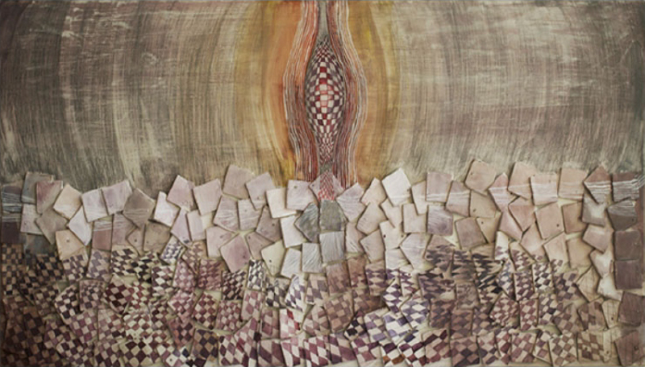

February 10, 2012
Walking on fresh grass at dawn
The first dream artist Natasha Iqbal could recall is of playing with colours
© Natasha Iqbal
Art to the artist Natasha Iqbal is creation, dawn of a thought process. “It’s a vast genre. I believe art is present in everything: the art of talking, the art of cooking, the art of carrying yourself. And then, there are the visual arts, the performing arts and many other forms,” Natasha told me in an interview. According to her, an artist is someone who has the courage to express and propagate their thoughts and who knows that it is an artist who swims against the current.
The first dream that she could recall is of playing with colours, when she had no idea about what art is or what an artist does. “I’ve been struggling to become an artist since the beginning, and I think I have a long way to go. I still think twice before calling myself an artist, which in turn, I think, makes me one.” Talking about her work, she said, “If even a stroke of mine has ever made a viewer stop, turn their head and stare at it for more than a second, I think I have been successful in creating a piece of art.”
When asked if artists are different from other people, she said, “Definitely! A true artist, I believe, is the one who isn’t running after galleries, who isn’t counting the days until holding their next exhibition, who makes art for the sake of art, and who sees and comments on things in a way that’s quite different from how others would.”
Describing what attracts her about being an artist, she said, “Art is just like a walk on the fresh grass at dawn, the way you feel the dew entering your blood through your pores. When you feel something like that, how can anyone ever stop you from being pulled towards it?” As an artist, Natasha feels she has a huge responsibility on her shoulders. “Just like doctors, lawyers, engineers and soldiers, I believe artists also need to serve their country. Just like any other movement in the past, today’s artists need to comment and make people think about current issues.”
Regarding when she realised she wanted to be an artist, she said, “I guess it was something God might have whispered in my ear at the time of creating me, because I feel I had wanted to become an artist from the day I could distinguish between blue and green.” While she likes experimenting with different mediums, “one medium that’s my best friend is ink. One pot of Indian ink, one plain piece of sheet and one brush. That’s all I need.”
She tries to get inspiration from as many things as possible. “Being a writer as well, it allows me to absorb everything around me and channel it out one way or another.” She admits that looking at other artists’ works influences her own, which is why she tries not to look at other artworks. “I try to produce art in isolation. I can never be happy about something I made out of someone else’s creation. For me, that’s a lie.”
Talking about her process of producing art, she said, “It’s quite surprising for me, as well as for many artists and teachers. I’m more of a visualiser than a sketcher. I paint every single stroke in my head first. I don’t waste any time or let the idea get stale by going through a long process. It’s snip and snap for me.” Moreover, it’s the process that Natasha enjoys more than the finished piece. “I think the process will always win, because a time comes when you’re having a dialogue with your painting. You feel like it’s communicating with you. Once the painting is complete, the communication stops and the painting gets silent. To me, a finished painting is like a conversation that has dried out.”
When asked what drives her to continue producing art, she said, “It’s something I am, and you can never stop being someone you are. So, I’d never need any drive to produce art. It’s in me. I sometimes express in the form of a painting, sometimes a sketch, sometimes a poem or sometimes a boring graphical poster. But, yes, I always keep on expressing myself in whichever way I can. I don’t think I can ever stop myself from expressing. I like to talk, communicate and put my point of view out there, and I keep on finding ways to do that.”
She said her work is important. “Like every drop of the ocean, like every grain of sand and like every leaf of a tree, my work stands somewhere in the ecosystem of expression.” When asked why she produces art, she said, “There are artists who paint for money, some paint for success, some paint for adding to their portfolio, some paint to get their message out there, some paint to comment on social issues, and some paint because that’s what they do best. I often wonder which of these categories I fit in.”
The best reaction she received on her art was from her father. “He saw one of my paintings and said, ‘Don’t ever throw this painting away or give it to anyone.’ And the worst reaction was from my teacher Asim Akhtar who simply said, ‘Horrible.’ ” When asked if it’s important for her that people understand or like her work, she said, “No. Rather, I appreciate it when they don’t. It helps keep my fuel going and my engines running to produce something better.”
Regarding what her art gives back to her, she said, “A conversation, which I could never have with a human. Every painting of mine talks to me and we converse every time I look at any of them.” When asked if her art fulfils her, she said, “I exist because I can express, and nothing can ever fulfil me in a better way than my art.”
She said her friends and family have played a great role in her work. “I believe every single person I have come across has made me who I am, for better or for worse. And I could never be more thankful to all of them. I think my family has been there for me always, and I could never be more thankful. My friends and family not only support me, but also encourage me whenever I feel disheartened or defeated.”
Talking about criticism, she said, “Healthy or not, it plays a pivotal role in shaping up a line of thought. It’s just like a blade on a hedge; the sharper the cut, the tidier the hedge turns out. And after every few days, you need another cut. So, it’s a constant process.” However, she doesn’t take criticism well. “My work is my child. I give birth to it after a long series of pain and misery. It’s quite hard to take criticism when you know what you went through to create it. But I take time to absorb all the criticism I get and try to channel it into positive energy and creativity.”
She works with lines and circles a lot. “Figurative or symbolic, my work somehow has angles and curves. They are recurring elements in my work, and I have now stopped myself from even trying to avoid them. They find their way in the composition one way or another.” She listed “life, existence, and what man wants and desires” as the frequent themes of her work.
Natasha puts her soul, her blood, her sweat – her everything – in her work. She believes that passion is the driving force of any profession, not just art. “Passion is that spark that goes off in your head to ignite the thought process. It is the direction or course of life that determines what it’s going to invest in. So, passion plays a great role in producing anything – a tune, a clock, a straw, and also a painting.” Once she starts a project, she cannot sleep until she finishes it. “I do not linger on my painting for long.”
Among artists long gone, she admires Vincent van Gogh the most; whereas among the living, her most favourite is Olafur Eliasson. When asked which artist she would prefer to receive training from, she said, “It’s like choosing between soda in summer and hot coffee in winter. I’d love to meet Jackson Pollock, Pablo Picasso, Van Gogh, Salvador Dalí, Marcel Duchamp – the list goes on!”
She said the only reason art is considered taboo in the Pakistani society is because very few artists have painted for the people or, at least, made art accessible to the layman. She believes that the government needs to not only fund art schools, but promote art as a profession as well. “I am surprised how even today highly educated families want their children to become engineers or accountants or bankers.”
She said art is as important as any other profession, but “it just needs to find its way into people’s hearts.” When asked if it’s difficult to be an artist these days, she said, “No. I believe being an honest artist in today’s world is more difficult. Then again, just being honest is very difficult these days.” She thinks art is more popular today than it was in the past. “It’s being practised by a lot of promising artists, and I’m very hopeful that it will blossom more in the coming years.”
She said a lot of contemporary artists are producing mediocre work. “I feel really sad when an artist finds shortcuts or easier ways to make art. One should never compromise quality for the sake of quantity.” She believes that some artists produce controversial art only because controversy sells. Then again, she added, controversy attracts everyone. “It’s a human trait that even artists can’t keep themselves away from.”
Natasha graduated with a gold medal in 2010 from the Fatima Jinnah Women University and would be leaving later this year for her master’s degree in painting under the Fulbright Scholar Programme.
First published in Pakistan Today